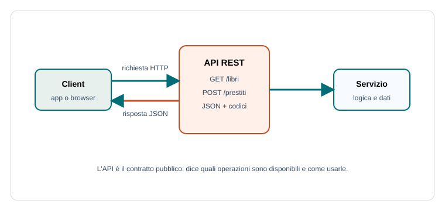

Capitoletto 3
API e servizi Web
Un'API permette a un software di usare funzioni offerte da un altro software. Nei sistemi distribuiti è il contratto che rende possibile integrare applicazioni, servizi e dati.
Obiettivi della lezione
- Definire API e servizio web.
- Capire risorse, endpoint e metodi HTTP.
- Interpretare richieste e risposte JSON.
- Usare codici di stato per descrivere l'esito.
- Comprendere autenticazione e documentazione delle API.
API e servizio web
API significa Application Programming Interface: è un'interfaccia pensata per essere usata da programmi. Un servizio web è un servizio raggiungibile tramite rete, spesso con HTTP o HTTPS, che espone una o più API.
Chi usa un'API non deve conoscere il codice interno del servizio. Deve conoscere indirizzo, endpoint, formato dei dati, metodi consentiti, codici di risposta e regole di autenticazione.

Risorse ed endpoint
In un'API REST si ragiona spesso per risorse: utenti, libri, prenotazioni, voti, file. Un endpoint è l'indirizzo che permette di accedere a una risorsa o a un'operazione.
| Endpoint | Significato | Esempio di uso |
|---|---|---|
/libri | Collezione dei libri. | Elenco o creazione. |
/libri/42 | Libro con identificatore 42. | Dettaglio, modifica o eliminazione. |
/prestiti | Prestiti registrati. | Creare un nuovo prestito. |
Metodi HTTP
I metodi HTTP indicano l'azione richiesta. Usarli bene rende l'API più prevedibile e leggibile.
| Metodo | Uso tipico | Esempio |
|---|---|---|
| GET | Leggere dati. | Ottenere l'elenco dei libri. |
| POST | Creare una nuova risorsa. | Registrare un prestito. |
| PUT/PATCH | Aggiornare una risorsa. | Modificare una prenotazione. |
| DELETE | Eliminare una risorsa. | Cancellare una prenotazione. |
JSON e codici di stato
Molte API scambiano dati in JSON perché è testuale, compatto e facilmente utilizzabile da linguaggi diversi. La risposta contiene spesso un corpo dati e un codice di stato.
POST /prestiti
{"libroId":42,"utente":"rossi.mario"}
Risposta:
201 Created
{"id":881,"scadenza":"2026-05-20"}| Codice | Significato | Quando usarlo |
|---|---|---|
| 200 | Operazione riuscita. | Lettura o modifica completata. |
| 201 | Risorsa creata. | Nuovo prestito registrato. |
| 400 | Richiesta non valida. | Campo obbligatorio mancante. |
| 401/403 | Accesso non valido o non autorizzato. | Utente non autenticato o senza permessi. |
| 404 | Risorsa non trovata. | Libro inesistente. |
Autenticazione e limiti
Molte API richiedono autenticazione tramite sessione, token o chiave API. L'autenticazione dice chi sta chiamando; l'autorizzazione dice quali operazioni può eseguire. Un servizio può anche applicare limiti di frequenza per evitare abusi o sovraccarichi.
Documentare una API
Una API utile deve essere documentata. La documentazione deve spiegare endpoint, metodi, parametri, esempi, risposte, codici di errore, autenticazione e versioni.
- Nome e scopo dell'endpoint.
- Metodo HTTP e URL.
- Parametri richiesti e opzionali.
- Esempio di richiesta.
- Esempio di risposta positiva e negativa.
Esercizi guidati
- Progetta tre endpoint per gestire prenotazioni di laboratorio.
- Scegli il metodo HTTP corretto per leggere, creare, modificare e cancellare una risorsa.
- Scrivi una risposta JSON per un errore di prenotazione sovrapposta.
Domande con risposta semplice
Che cos'è un endpoint?
È l'indirizzo di una funzione o risorsa esposta da una API.
Perché si usa spesso JSON?
Perché è leggibile, compatto e supportato da molti linguaggi.
API e interfaccia grafica sono la stessa cosa?
No. L'interfaccia grafica è per gli utenti; l'API è per altri programmi.
Per ripassare
Un'API è un contratto: endpoint, metodo, dati, risposta, errori e permessi. Se manca uno di questi elementi, l'integrazione diventa fragile.